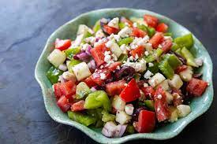

Greek Salad

Description
Also known as horiatike - usually made with tomato, cucumber, onion, feta and olives
Ingredients
- 4 large vine tomatoes, cut into irregular wedges
- 1 cucumber, peeled, deseeded, then roughly chopped
- Half a red onion thinly sliced
- 16 Kalamata olives
- 1 tsp dried oregano
- 85g feta cheese, cut into chunks
- 4 tbsp Greek extra virgin olive oil
Steps
- Place 4 large vine tomatoes, cut into wedges
1 peeled, deseeded and chopped cucumber
half a thinly sliced red onion
16 Kalamata olives
1 tsp dried oregano
85g feta cheese chunks
and 4 tbsp Greek extra virgin olive oil
in a large bowl.
- Lightly season
then serve with crusty bread
to mop up all of the juices